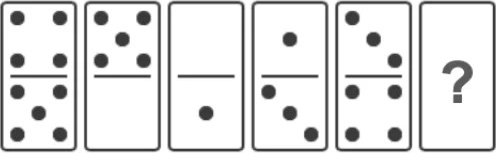
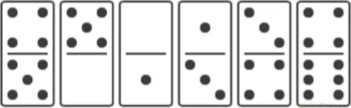

Encuentra la secuencia siguiente en las piezas presentadas:

¡Felicitaciones! 🥳
Has completado la tarea con éxito. La solución correcta es: 4 / 6

Esto es por las siguientes razones:
Tantos los lados superiores como inferiores, aumentan de manera alternativa en +1 y +2 unidades.
Analicemos cada vertiente:
Vertiente superior: La secuencia anterior obtuvo dos (+2) unidades de aumento, por lo que la secuencia que continua es aumentar una unidad (+1). Por esta razón el valor es cuatro (4).
Vertiente inferior: La secuencia anterior obtuvo un (+1) unidad de aumento, por tanto el aumento correspondiente son dos unidades (+2). Por esta razón el valor es seis (6).
Lo siento, has perdido 😥
No te preocupes si elegiste una opción incorrecta.
Recuerda que el pensamiento lógico es una habilidad que se adquiere con la práctica.